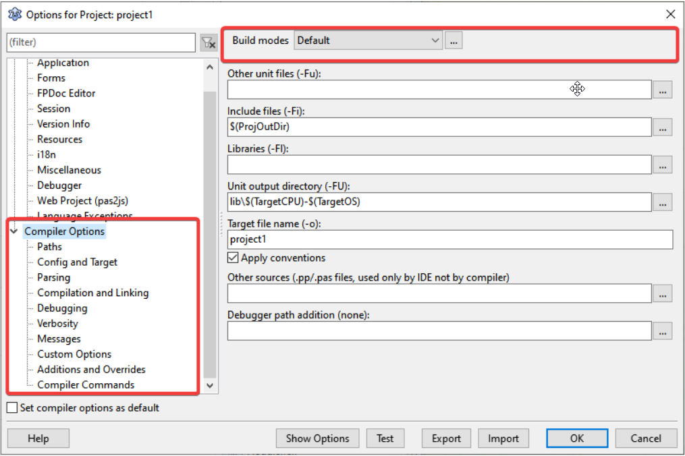
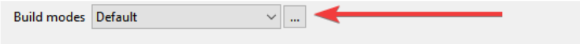
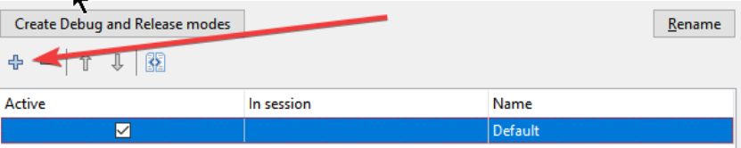
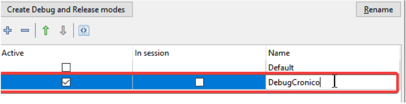
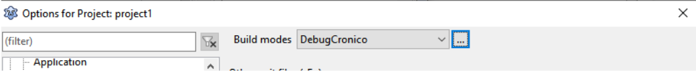
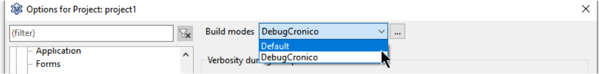

Vamos agora aos BuildsModes, o que são eles?
Ao compilar um projeto você esta informando como deseja a compilação, o padrão do Lazarus é bem básico e todas as vezes que compilar vai incluir um peso de debug ao seu projeto o que o tornará mais pesado e lento do que deveria ser.
Como exemplo, um aplicativo básico com CRUD de 16 tabelas e 42 units com classes e formulários tem 56MB, nada mal hein? Porém se removermos o debug, além de mais rápido e ágil, o executável final cai para 16MB!
Este é o peso do debug incorporado ao projeto e estamos falando de um debug que é ajustado para ser bem básico, dá para ter um debug ainda maior com alguns ajustes que nos dão ainda mais informação na hora de debugar um programa. Então precisamos ter BuildsMode para cada intenção nossa, por exemplo, debug básico para encontrar falhas de rotina que talvez mostrem a linha e o valor de variáveis, um debug mais completo que varre o retorno de funções/métodos/propriedades e outro que é compilar sem debug nenhum para entregar um executável otimizado.
Vá em Projet->Project Options, depois selecione a guia Compiler Options. Você acaba de encontrar esta tela configuração com Build modes chamada “Default”:

Vamos acrescentar mais um, clique em “...”:

Na janela seguinte, em Build Mode “Default” clique em “+” para criar mais um:

E dê um nome significativo para o que iremos fazer agora, vamos chamá-lo de “DebugCronico”:

Agora você clicará em OK e fechará a janela atual e retornará a que estavamos antes, note na parte superior:

O Build mode está ajustado para “DebugCronico”, qualquer configuração que fizermos estará sob este nome, então vamos fazer alguns ajustes que estarão sob este build mode.
Estes foram os ajustes que me ajudaram muito, clique em OK.
Agora ao compilar um programa com F9 ou Ctrl+F9 você estará usando o perfil “DebugCronico” todas as vezes, mas quando precisar trocar vá em Project->Options e troque o Build Mode para o que deseja usar:

Seja esperto agora e crie um Build Mode com o nome “DebugDesligado” e desligue as opções de debug, todas elas. Você usará este build mode quando for gerar um executável final para a linha de produção.
Considerações finais: O Build Mode não é apenas para compilar e debugar. Cada Build mode pode ser usado para uma finalidade diferente, por exemplo, um deles para crosscompiler e gerar programas para Linux, Windows, 32/64bits e ainda outras plataformas.